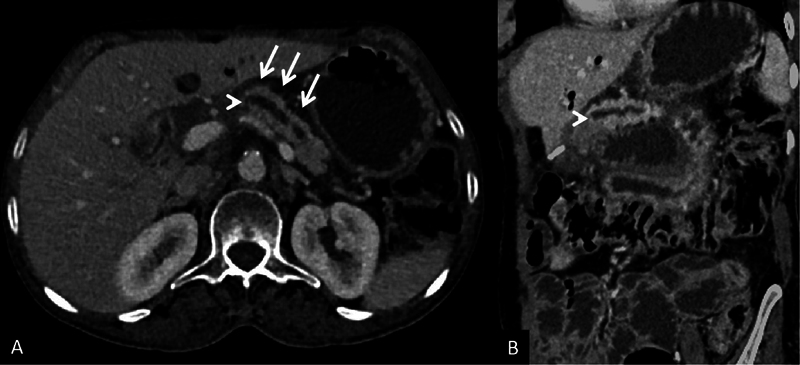
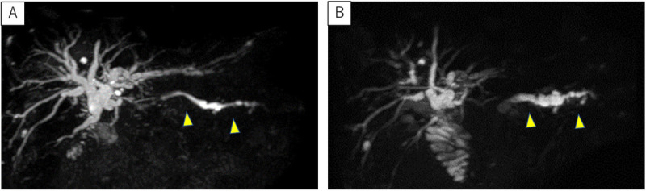

1981 — Hẹp miệng nối tụy–ruột sau mổ Whipple / Pancreaticojejunostomy (PJ) stricture
Tags: pattern:hep-mieng-noi pattern:gian-ong-tuy pattern:teo-tuy pattern:viem-tuy-tai-phat vung:tuy vung:o-bung protocol:MRCP protocol:CT-bung-co-can-quang protocol:EUS score:MPD
Mức chắc chắn (certainty): tổng hợp y văn (literature synthesis) — số liệu lấy từ ba đoàn hệ/loạt ca có đếm được mẫu số (314 ca, J Visc Surg 2019; 20 ca theo dõi 1 năm, Langenbecks Arch Surg 2023 — PMC10444682; 95 ca PEI, Pancreatology 2022), một bài tổng quan hình ảnh hậu phẫu (Indian J Radiol Imaging 2026 — PMC12788925) và ba ca nguyên văn có ảnh (PMC11213583; PMC5076772; Gastrointest Endosc 2010). Không có thử nghiệm ngẫu nhiên; các ngưỡng điều trị là thực hành đồng thuận, chỗ suy luận được ghi rõ.
Câu chốt: hẹp miệng nối tụy–ruột là biến chứng muộn, hiếm nhưng bị bỏ sót nhiều — ba con số quyết định: (1) hẹp có triệu chứng chỉ 0,9% (3/314) và y văn ghi **< 3%**, nhưng xuất hiện **chủ yếu ở người mổ vì bệnh lành tính nên sống lâu** (ANZ J Surg 2018); **(2)** **MRCP là khảo sát xác nhận tốt nhất** — ống tụy chính (MPD) giãn thượng lưu **thắt đột ngột tại miệng nối**, và trong ca được can thiệp MPD giảm từ **8,3 mm xuống 3,6 mm** (giảm **60%**) sau khi thông lại (Gastrointest Endosc 2010); **(3)** **hình ảnh thông ≠ chức năng tốt**: 1 năm sau mổ, **15/16 (94%)** miệng nối thông trên MRI nhưng fecal elastase giảm từ **96 xuống 15 µg/g** (bình thường > 200) — nên không được chẩn đoán hẹp bằng elastase thấp (PMC10444682).
1. Tổng quan bệnh học – cơ chế hình ảnh (TẠI SAO)
1.1 Bệnh học: xơ hóa tại chỗ nối, không phải "ống tụy bị bịt"
- Sau cắt đầu tụy–tá tràng (pancreaticoduodenectomy, PD/Whipple), mỏm tụy còn lại được nối vào quai hỗng tràng (PJ) hoặc dạ dày (PG). Miệng nối là chỗ hẹp nhất của toàn bộ đường tụy vì: (a) đường kính ống tụy bị cắt ngang chỉ 2–4 mm; (b) mỏm tụy bị thiếu máu cục bộ sau khi thắt các nhánh mạc treo; (c) nếu có rò tụy sau mổ (POPF) thì ổ viêm–dịch quanh miệng nối tổ chức hóa thành mô xơ.
- Hệ quả: lòng nối hẹp dần trong nhiều tháng–nhiều năm, tạo tăng áp lực trong ống tụy thượng lưu → viêm tụy tái phát từng đợt, đau bụng, và cuối cùng teo nhu mô tụy + suy tụy ngoại tiết (PEI) + đái tháo đường.
- Vì là biến chứng muộn, nó gặp nhiều ở người mổ vì bệnh tiên lượng tốt (nang nhầy, u thần kinh nội tiết, viêm tụy mạn, chấn thương) — nhóm sống đủ lâu để hẹp biểu hiện.
1.2 TẠI SAO nhìn thấy trên MRCP và CT: nước trong ống tụy là "đèn hiệu"
- Dịch tụy gần như là nước tự do → thời gian T2 rất dài, nên trên MRCP (xung T2 nặng, 3D thick-slab) ống tụy hiện thành đường sáng trắng trên nền mô tối; không cần cản quang.
- Hẹp = mất tín hiệu dịch tại một điểm + giãn thượng lưu: ống tụy trước chỗ hẹp to ra, thắt hình nón (tapered) đột ngột đúng tại thành hỗng tràng, và không thấy dòng dịch nối tiếp vào ruột. Ca minh họa ở mục 2 cho thấy MPD giãn theo trục thân–đuôi với điểm tắc hoàn toàn tại miệng nối.
- Mô xơ tại miệng nối trên MRI có tín hiệu T2 trung–thấp (collagen ít nước) và ngấm thuốc thì muộn (xơ mạch hóa), trong khi u tái phát là mô đặc ngấm thuốc thì động mạch–tĩnh mạch, hạn chế khuếch tán (ADC thấp) và có khối > 1 cm. Đây là chìa khóa phân biệt "hẹp lành" với "hẹp do u".
- Trên CT (ảnh A ở mục 2): ống tụy giãn là cấu trúc giảm đậm dịch (0–20 HU) chạy trong nhu mô tụy teo; teo nhu mô là dấu phụ rất gợi ý vì tụy mất chức năng thì mô mỡ thay dần. Cần thì tĩnh mạch cửa để thấy miệng nối, mô xơ và loại trừ giả phình động mạch quanh mổ.
1.3 Ngưỡng định lượng dùng được ngay trên máy
- MPD bình thường ≤ 3 mm; sau PD, đường kính ống tụy còn lại trung vị 4 mm (IQR 3–5) ở 1 năm — nên "giãn nhẹ 3–5 mm" một mình không phải hẹp (PMC10444682).
- Ngưỡng thực dụng cho hẹp có ý nghĩa: MPD > 3 mm kèm thắt đột ngột tại miệng nối + teo nhu mô thượng lưu ± đợt viêm tụy tái phát. Ca được can thiệp trong y văn: MPD 8,3 mm → 3,6 mm sau thông (giảm 60%), đau hết trong 24 tháng theo dõi (Gastrointest Endosc 2010).
- Chức năng ≠ hình thái: PEI sau PD gần như phổ quát — 98% bệnh nhân PD có fecal elastase < 200 µg/g ở 6 tháng (J Visc Surg 2018, 91 ca), tất cả 95 bệnh nhân trong đoàn hệ tiến cứu có PEI ở 6 tháng, và 81% (95% CI 61–93%) được xác nhận PEI dài hạn bằng bộ ba nghiệm pháp (Pancreatology 2024). Vì vậy elastase thấp là hệ quả của phẫu thuật, không phải bằng chứng hẹp.
2. Mẫu hình + chẩn đoán phân biệt theo vị trí (gamut)
Mẫu hình chính: "ống tụy giãn thượng lưu + thắt đột ngột tại miệng nối + teo nhu mô" ở bệnh nhân đã mổ Whipple, đến với đau bụng từng đợt hoặc viêm tụy tái phát.
Gamut theo vị trí so với miệng nối — gợi nhớ S.C.A.R.:
| Vị trí | Thực thể | Vì sao phải nghĩ tới |
|---|---|---|
| Tại miệng nối | Stricture (hẹp lành tính) | Xơ hóa sau POPF/thiếu máu; thắt nhẵn, không khối |
| Tại miệng nối | Cancer (u tái phát) | Khối mô mềm > 1 cm, ngấm thuốc, ADC thấp, CA 19-9 tăng |
| Quanh miệng nối | Afferent loop (quai tới) | Tắc quai tới: quai ruột giãn > 3 cm, đầy dịch, không hơi |
| Thượng lưu | Remnant pancreatitis (viêm tụy mỏm) | Phù nhu mô, dịch quanh tụy, PPAP sau mổ |
| Ngoài tụy | Nang bạch huyết, áp-xe, giả phình ĐM | Ổ dịch/krăng quanh mỏm tụy, khí trong ổ, giả phình thì ĐM |
- Phân biệt sống còn: "hẹp lành tính" → nong/stent qua nội soi; "u tái phát" → chẩn đoán mô học + điều trị hệ thống, nong bóng chỉ làm chậm chẩn đoán.
- Không quên trục chức năng: PEI và đái tháo đường sau PD tiến triển độc lập với hẹp — nghĩa là bệnh nhân có thể vừa hẹp vừa PEI, và điều trị PEI (enzyme thay thế) không chờ kết quả hình ảnh.

(A) ảnh trục: ống tụy chính giãn (mũi tên trắng) với điểm thắt đột ngột tại miệng nối PJ (đầu mũi tên); (B) ảnh MPR cong theo trục ống tụy cho thấy rõ ống giãn thượng lưu. Nguồn: Indian J Radiol Imaging 2026 — PMC12788925, Fig. 4; giấy phép CC BY-NC-ND 4.0, ảnh nguyên bản không cắt/ghép.
3. Bảng so sánh phân biệt (ma trận đối chiếu)
| Thực thể (entity) | Hình ảnh điển hình (CT / MRCP / EUS) | Chốt vào (rule-in) | Chốt loại (rule-out) | Gợi ý xác nhận |
|---|---|---|---|---|
| Hẹp PJ lành tính | MPD giãn thắt hình nón, bờ nhẵn đúng tại miệng nối; nhu mô teo; không khối | Thắt nhẵn + MPD > 3 mm + teo + đợt viêm tụy tái phát | Khối mô mềm ngấm thuốc > 1 cm hoặc ADC thấp → không phải hẹp đơn thuần | MRCP ± secretin; EUS đo/thông; nong bóng thử |
| U tái phát tại miệng nối | Khối mô mềm ≥ 1 cm, bờ không đều, ngấm thuốc thì ĐM/TM, hạn chế khuếch tán | Khối + ADC thấp + CA 19-9 tăng | Ống giãn đơn thuần, không khối, CA 19-9 ổn định → nghĩ hẹp lành | EUS-FNA/FNB qua quai tới; PET-CT khi còn nghi |
| Viêm tụy mỏm cấp (PPAP) | Nhu mô phù, ngấm thuốc không đều, dịch quanh tụy, không thắt miệng nối | Khởi phát ≤ 7 ngày sau mổ + amylase/lipase > 3× ULN + phù nhu mô | Hẹp có thắt khu trú, khởi phát nhiều tháng–năm → không phải PPAP | CT thì TM cửa; theo dõi enzyme |
| Tắc quai tới (afferent loop) | Quai hỗng tràng giãn > 3 cm, đầy dịch, không hơi, hình chữ U; ống tụy có thể không giãn | Quai giãn + nôn dịch mật + đau sau ăn | MPD giãn đơn thuần, quai ruột xẹp → loại | CT có cản quang; enterography |
| Ổ dịch / giả phình quanh miệng nối | Ổ dịch 0–20 HU, có khí nếu nhiễm; giả phình ngấm thuốc đồng thì ĐM, giữ hình | Khí trong ổ + sốt (áp-xe) hoặc nang đậm độ mạch thì ĐM (giả phình) | Ổ dịch đồng nhất, không khí, không đậm mạch → theo dõi | CTA; siêu âm Doppler; chọc hút khi nghi nhiễm |
4. Protocol chụp + hệ phân độ / thuật toán xử trí
- Bước 1 — MRCP (khảo sát được chọn): 3D thick-slab + chuỗi mỏng T2 fat-sat; thêm secretin (1 IU/kg) nếu cần đánh giá "thông chức năng": ống tụy giãn thêm sau 5–10 phút rồi xẹp = miệng nối còn thông; không giãn thêm gợi ý mất chức năng tiết hoặc tắc hoàn toàn (diễn giải thận trọng ở người đã PEI nặng).
- Bước 2 — CT bụng có cản quang (thì ĐM + TM cửa, lát ≤ 3 mm): đo MPD, tìm khối, mô xơ, ổ dịch, giả phình, quai tới. Đây là phim "một lần chụp trả lời nhiều câu hỏi" trong cấp cứu.
- Bước 3 — EUS: đo ống tụy, xác định miệng nối, chọc ống tụy + đặt guidewire để nong/stent (kỹ thuật "rendezvous"); tỉ lệ thất bại của EUS rendezvous tới 25%, phải làm lại nhiều lần (J Visc Surg 2019).
- Bước 4 — nội soi qua quai tới (double-balloon) hoặc PANK khi đường ngược dòng không tới được; kỹ thuật PANK (pancreatic antegrade needle-knife) đặt stent bắc cầu 6–8 tuần, nâng cỡ rồi rút sau 4 tuần nữa.
- Bước 5 — mổ lại (redo PJ) khi thất bại nội soi/lâm sàng tái phát: rò tụy sau mổ lại ~5%, biến chứng chung ~20% — thấp hơn nhiều người nghĩ, nên không được coi "mổ lại là quá nặng" để trì hoãn vô hạn (J Visc Surg 2019).
Ngưỡng & con số dùng trong quyết định:
| Thông số | Ngưỡng / giá trị | Ý nghĩa |
|---|---|---|
| MPD sau PD | trung vị 4 mm (IQR 3–5) ở 1 năm | "Giãn nhẹ" là bình thường hậu phẫu |
| MPD gợi ý hẹp | > 3 mm + thắt đột ngột | Kết hợp teo nhu mô và triệu chứng |
| Fecal elastase | < 200 µg/g = suy ngoại tiết | Không dùng để chẩn đoán hẹp |
| Tỷ lệ hẹp có triệu chứng | 0,9% (3/314); y văn < 3% | Bệnh hiếm, dễ bỏ sót |
| Thất bại EUS rendezvous | tới 25% | Cần kế hoạch dự phòng |
| Redo PJ | rò tụy ~5%, biến chứng ~20% | Lựa chọn hợp lý khi nội soi thất bại |
flowchart TD
A[Đã mổ Whipple, đau bụng từng đợt hoặc viêm tụy tái phát] --> B[MRCP + CT bụng có cản quang]
B --> C{MPD giãn và thắt tại miệng nối?}
C -->|Không| D[Tìm nguyên nhân khác: quai tới, sỏi, u, loét]
C -->|Có| E{Có khối hoặc ADC thấp hoặc CA 19-9 tăng?}
E -->|Có| F[EUS-FNA/FNB loại trừ u tái phát trước khi nong]
E -->|Không| G[Nội soi qua quai tới: nong bóng + stent]
G -->|Thất bại| H[EUS rendezvous hoặc PANK]
H -->|Thất bại hoặc tái phát| I[Redo PJ: rò tụy 5 phần trăm, biến chứng 20 phần trăm]
G --> J[Theo dõi: MRCP lại khi triệu chứng tái phát + elastase và HbA1c]
5. Biến thể bình thường và cạm bẫy
- "Ống tụy giãn nhẹ sau Whipple" là bình thường: trung vị 4 mm ở 1 năm, 94% miệng nối thông — đừng gọi hẹp chỉ vì MPD 4–5 mm.
- Miệng nối khó thấy: trên CT trục, PJ nằm sát tĩnh mạch mạc treo trên và có thể bị nhầm với miệng nối dạ dày–hỗng tràng; phải dùng MPR cong theo trục ống tụy (ảnh B ở mục 2) hoặc MRCP trước khi kết luận.
- Mô xơ ngấm thuốc = "khối giả": xơ hóa quanh miệng nối ngấm thuốc thì muộn, không hạn chế khuếch tán, kích thước ổn định qua các lần chụp. U tái phát thì to lên và ADC giảm — so phim cũ là bắt buộc.
- Bẫy chức năng: elastase thấp gần như chắc chắn có sau PD (98%), nên dùng nó để "chẩn đoán hẹp" là sai logic; ngược lại, đừng vì "hình ảnh thông" mà bỏ điều trị enzyme — 94% thông vẫn kèm PEI.
- Bẫy điều trị: nong bóng lặp lại nhiều lần ở người hẹp tái phát làm tăng xơ và trì hoãn mổ lại; sau 2–3 lần thất bại nên chuyển tuyến có khả năng mổ lại.
6. Tự lượng giá — Blind Quiz (bấm để hiện đáp án)
Ca 1 — Nam 62 tuổi, Whipple vì nang nhầy 3 năm trước, đau thượng vị tái diễn, lipase tăng nhẹ.
- Câu hỏi: (1) Cấu trúc giãn chạy ngang thân tụy là gì? (2) Nó thắt lại ở đâu và tại sao? (3) Ba chẩn đoán phân biệt?
Bấm để hiện đáp án (findings + chẩn đoán)
- Findings: ống tụy chính giãn (mũi tên trắng) chạy trong nhu mô tụy teo, thắt đột ngột tại miệng nối tụy–hỗng tràng (đầu mũi tên); MPR cong xác nhận toàn bộ trục ống tụy thượng lưu giãn.
- Chẩn đoán: hẹp miệng nối PJ sau Whipple — xơ hóa tại chỗ nối làm tắc dòng dịch tụy, gây viêm tụy thượng lưu tái phát.
- Phân biệt: u tái phát tại miệng nối (cần khối/ADC thấp), tắc quai tới, ổ dịch–giả phình quanh mỏm tụy.
- Nguồn ảnh: Indian J Radiol Imaging 2026, PMC12788925 Fig. 4 — CC BY-NC-ND 4.0 (nguyên bản, không cắt/ghép).
Ca 2 — Cùng bệnh nhân, theo dõi MRCP 9 tháng và 22 tháng sau mổ.

- Câu hỏi: (1) Ống tụy thay đổi thế nào giữa hai lần chụp? (2) Dấu hiệu nào trên MRCP xác nhận hẹp? (3) Bước tiếp theo?
Bấm để hiện đáp án
- Findings: (A) 9 tháng: không giãn ống tụy còn lại (đầu mũi tên vàng); (B) 22 tháng: ống tụy chính giãn rõ thượng lưu — tiến triển theo thời gian, phù hợp hẹp miệng nối mắc phải.
- Chẩn đoán: hẹp PJ tiến triển; MRCP là khảo sát xác nhận (J Visc Surg 2019).
- Bước tiếp theo: nội soi qua quai tới để nong/stent; nếu thất bại → EUS rendezvous/PANK; nếu vẫn thất bại → redo PJ.
- Nguồn ảnh: Endosc Ultrasound 2024, PMC11213583 Fig. 1 — CC BY-NC-SA 4.0 (nguyên bản, không cắt/ghép).
Bài liên quan chéo
- 135 – Viêm tụy cấp & phân độ Atlanta
- 1730 – Hội chứng ống tụy đứt
- 1736 – Co thắt tụy & rò tụy nội bộ
- 1840 – Huyết khối mảnh ghép tụy
- 1934 – Rò tụy–phế quản
Ảnh
images/1981_hep-mieng-noi_CT_PMC12788925.jpg— CT, CC BY-NC-ND 4.0 (nguyên bản).images/1981_hep-mieng-noi_MRCP_PMC11213583.jpg— MRCP, CC BY-NC-SA 4.0 (nguyên bản).- Nguồn + giấy phép từng ảnh:
images/CREDITS.md. Không tạo ảnh ghép vì một ảnh là CC BY-NC-ND.
Không dùng để chẩn đoán độc lập khi chưa có người hướng dẫn.